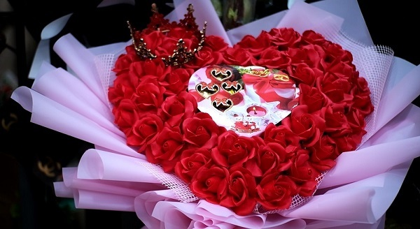
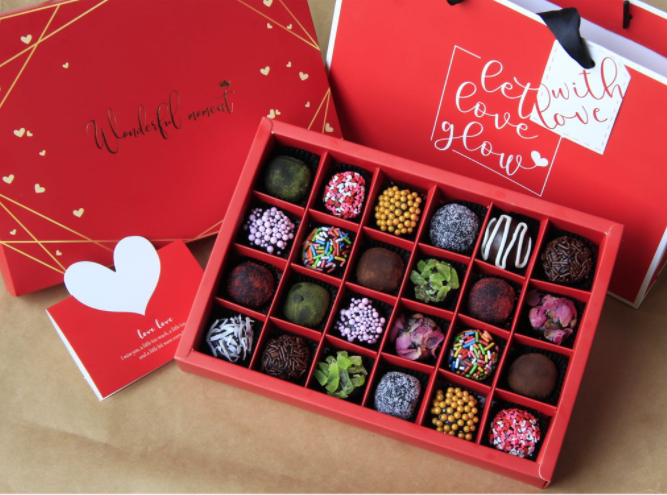
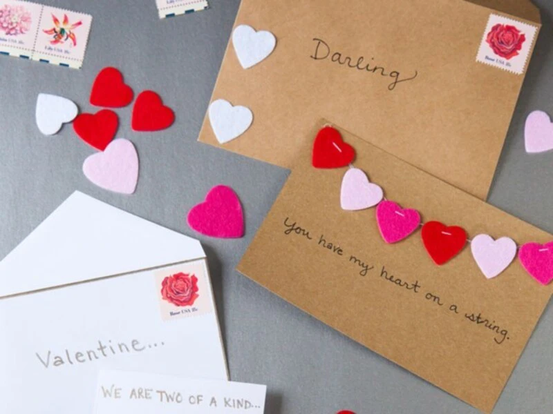
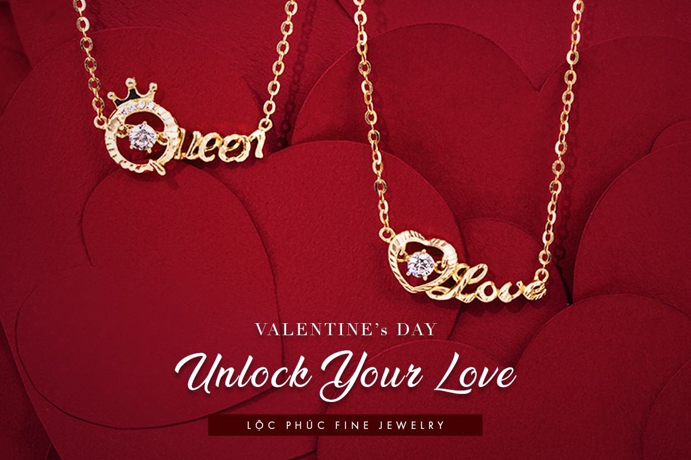
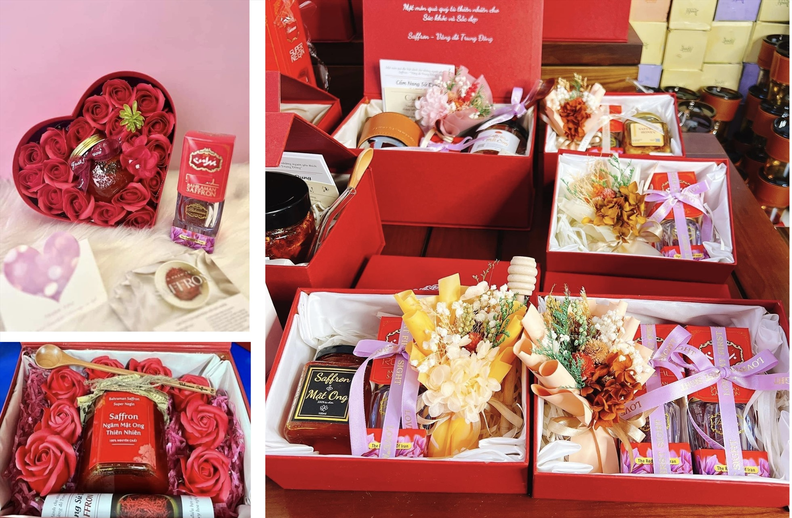

Ý nghĩa: Hoa hồng đỏ là biểu tượng của tình yêu nồng nàn, đam mê và sự lãng mạn. Tặng hoa hồng vào dịp Valentine là cách thể hiện tình yêu và sự trân trọng đối với người mình yêu.
Ý nghĩa: Sô cô la là món quà ngọt ngào, dễ dàng chia sẻ và có thể kết hợp với nhiều phong cách tặng quà khác. Đây là món quà truyền thống trong ngày Valentine, tượng trưng cho sự ngọt ngào và tình yêu lãng mạn.
Ý nghĩa: Một tấm thiệp tự tay viết những lời yêu thương, lời chúc chân thành sẽ khiến người nhận cảm thấy đặc biệt. Đây là món quà thể hiện sự quan tâm và chăm sóc đặc biệt.
Ý nghĩa: Một món trang sức như nhẫn, dây chuyền, bông tai sẽ là biểu tượng của tình yêu vĩnh cửu, sự gắn kết. Món quà này đặc biệt phù hợp cho những cặp đôi yêu nhau lâu dài.
Ý nghĩa: Một món quà thủ công như tranh vẽ, khung ảnh, hay một chiếc vòng tay tự làm sẽ thể hiện sự tận tâm và tình cảm đặc biệt dành cho người nhận.
